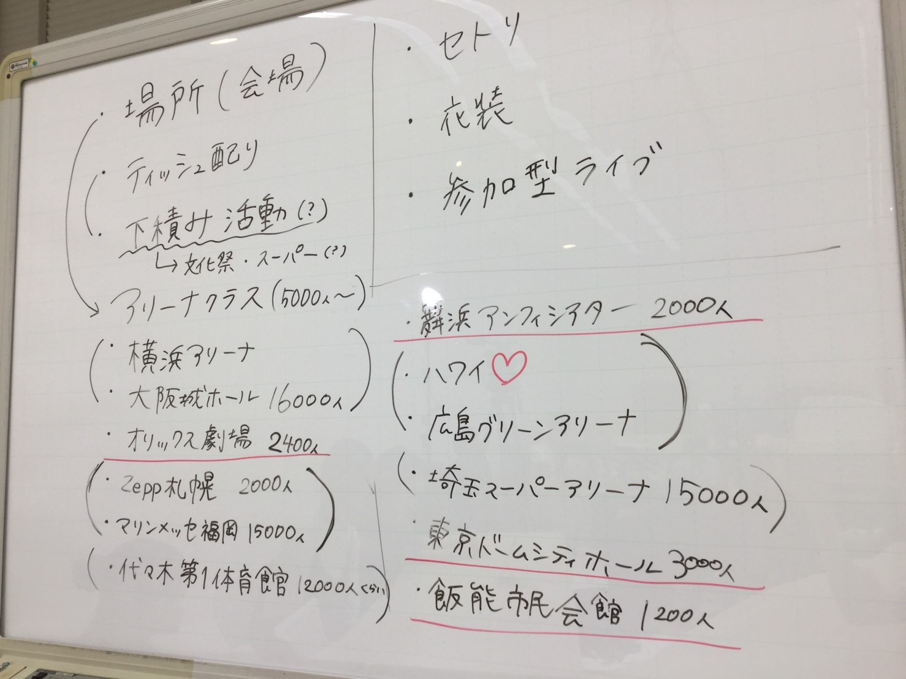
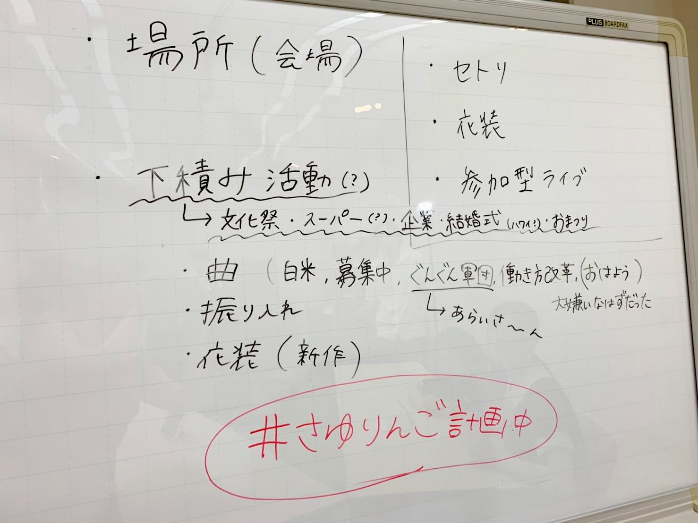
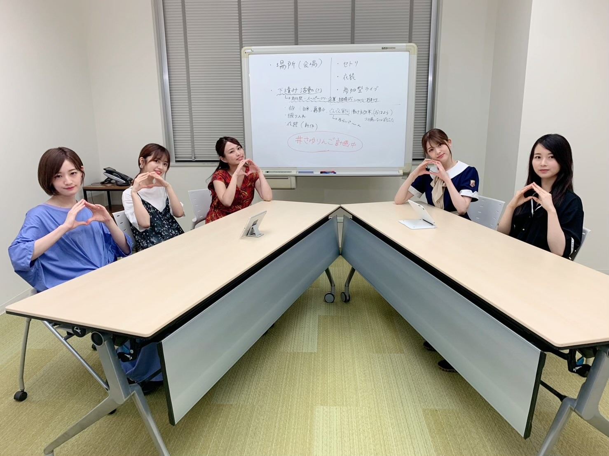

2019/0812Monさゆりんご計画中っ(o・・o)
松村沙友理です！
今日はさゆりんご軍団での
SHOWROOMありがとうございました！
昨日のあの子達とは
さゆりんご軍団でした！
ご覧になられてない方に
説明しますと、、、、
さゆりんご軍団の夢は
「武道館公演」！！！
でも なかなかその夢に近づけない、、、。
でも夢は叶えなきゃ意味がない！！！
叶わなくても何かしないと
後悔しちゃう！！！
そう思って 私達が
気軽に配信できるSHOWROOMさんの力と
可愛い可愛い才能あるさゆりんご軍団の皆に
集まってもらって
夢への一歩を踏み出すために
SHOWROOMで会議を開きました！！
「さゆりんご軍団で
武道館公演をやる為には
何が必要か！？」
何も 決まっておらず
何も 説明しないまま
集まってもらいましたが
さゆりんご軍団親衛隊の皆様のコメントに
たくさん アドバイスをもらい
画面の前の皆さんとも 一緒に会議は進みました！


まだまだ何も決まってないですが
動き出せそうな予感がします！
そこで ご意見やアドバイス
ライブをやってほしい場所など
#さゆりんご計画中
で、書いてね★
でも 一番は このブログのコメント(とかりんちゃんのInstagram)に
お願いします！

2019/08/12 21:06
コメント(996)
Showroomお疲れ様〜☺︎
静岡のエコパアリーナ(1万人動員)でやってほしいです！！
まいまいの卒コン以来のエコパアリーナ！！来てほしいなぁ
さわやかのげんこつハンバーグも食べに来て〜？？
静岡のエコパアリーナ(1万人動員)でやってほしいです！！
まいまいの卒コン以来のエコパアリーナ！！来てほしいなぁ
さわやかのげんこつハンバーグも食べに来て〜？？
さゆりんご軍団の夢実現のために！！！！
計画して下さってありがとうございます
下積みの中に文化祭と書いてるのですが、関学の文化祭にも来て欲しいです！！！ぜひ！！
会場は軍団長地元の大阪でオリックス劇場が！！！！
ライブみたいな感じで、さゆりんご軍団の曲はもちろん、他の表題曲やカップリング曲も聞きたいです♡
衣装はりんご色の赤だけじゃなくてメンバーのサイリウムの衣装等も見てみたいです
計画して下さってありがとうございます
下積みの中に文化祭と書いてるのですが、関学の文化祭にも来て欲しいです！！！ぜひ！！
会場は軍団長地元の大阪でオリックス劇場が！！！！
ライブみたいな感じで、さゆりんご軍団の曲はもちろん、他の表題曲やカップリング曲も聞きたいです♡
衣装はりんご色の赤だけじゃなくてメンバーのサイリウムの衣装等も見てみたいです
武道館ほんとに応援してるな！赤いスーツを着るみんなも見たい！白米様中に日村さんとまいやん出てくるとかも盛り上がりそう。。
さゆりーん！
Showroomみたよ！！！！
動き出してくれてありがとう！！
私は北海道在住なんだけど、乃木坂なかなか北海道来てくれなくて、北海道民は遠征ばっかりだから
是非！！北海道に来てほしいなあ…
Zepp札幌の他にきたえーるや真駒内セキスイハイムアリーナなど箱がたくさんあるので検討お願いします！！
北海道公演が決まったら友達連れて絶対行きます！！！
Showroomみたよ！！！！
動き出してくれてありがとう！！
私は北海道在住なんだけど、乃木坂なかなか北海道来てくれなくて、北海道民は遠征ばっかりだから
是非！！北海道に来てほしいなあ…
Zepp札幌の他にきたえーるや真駒内セキスイハイムアリーナなど箱がたくさんあるので検討お願いします！！
北海道公演が決まったら友達連れて絶対行きます！！！
いちこめ！
さゆりん！ブログ更新ありがとう！！
やっぱり地元の名古屋でライブして欲しい。！
けどまずは武道館公演の為には、、、
やっぱり認知度を上げていくしかない？
と思います、、、
次の更新も待ってるね！！
やっぱり地元の名古屋でライブして欲しい。！
けどまずは武道館公演の為には、、、
やっぱり認知度を上げていくしかない？
と思います、、、
次の更新も待ってるね！！
さゆりちゃん連日のブログ更新ありがとう！
そして、配信お疲れ様でした＾＾
お仕事で見れなかったからこうやってまとめてくれてとっても嬉しいです！！！やっぱり優しいな〜って！
ちょっとずつですけど夢に向かって進んでいってるのかな(*^^*)
まだまだこれからさゆりんご軍団のみんなとスタッフの方ともファンの皆さんと前に向かって進んでいけたらいいですよね！
タグなどを使って役立てることがあるような感じなんですね！
たくさん意見出せたらと思ってます(￣∀￣)
#さゆりんご計画中
①グッズについて
さゆりんご軍団オリジナルのグッズは期待しちゃいます！
軍団の役職名なんか書いた個別グッズとかもいいかもですね！
②記念撮影
親衛隊とメンバーでライブ前とか途中で記念撮影して、その写真を購入できる機会とかあるといちにちの思い出、記録にも記憶にも残るイベント、そして活動になると思います！！！
以上がひとまず思っていたとこなのでコメントさせてください！配信見れてないので話に出ていたら重複してごめんなさい！
それでは、また体調にだけは気をつけて！
明後日からの全ツ大阪も一緒に盛り上がっていきましょ♡
そして、配信お疲れ様でした＾＾
お仕事で見れなかったからこうやってまとめてくれてとっても嬉しいです！！！やっぱり優しいな〜って！
ちょっとずつですけど夢に向かって進んでいってるのかな(*^^*)
まだまだこれからさゆりんご軍団のみんなとスタッフの方ともファンの皆さんと前に向かって進んでいけたらいいですよね！
タグなどを使って役立てることがあるような感じなんですね！
たくさん意見出せたらと思ってます(￣∀￣)
#さゆりんご計画中
①グッズについて
さゆりんご軍団オリジナルのグッズは期待しちゃいます！
軍団の役職名なんか書いた個別グッズとかもいいかもですね！
②記念撮影
親衛隊とメンバーでライブ前とか途中で記念撮影して、その写真を購入できる機会とかあるといちにちの思い出、記録にも記憶にも残るイベント、そして活動になると思います！！！
以上がひとまず思っていたとこなのでコメントさせてください！配信見れてないので話に出ていたら重複してごめんなさい！
それでは、また体調にだけは気をつけて！
明後日からの全ツ大阪も一緒に盛り上がっていきましょ♡
2日連続でブログの更新ありがと！
北海道にも来て欲しいけど移動も時間かかるし大変かな？
函館アリーナはキャパ5000人ですよ笑
地方は多少キャパが小さい会場でも大丈夫だと思うけど
大阪や東京はアリーナくらいでやれたら最高かなと
全国で何ヶ所かでやれたら最高ですね！
親衛隊で協力できることならみんな協力すると思うから
一緒に頑張って実現しましょう
北海道にも来て欲しいけど移動も時間かかるし大変かな？
函館アリーナはキャパ5000人ですよ
地方は多少キャパが小さい会場でも大丈夫だと思うけど
大阪や東京はアリーナくらいでやれたら最高かなと
全国で何ヶ所かでやれたら最高ですね！
親衛隊で協力できることならみんな協力すると思うから
一緒に頑張って実現しましょう
さゆりんご軍団、みんなも楽しそうで、ファンも楽しませてくれて、本当に最高の軍団！軍団長です。いつも、わくわくとおもしろと元気と夢をありがとう。
りんごの形した軍団ペンライトが欲しいなあ。
りんごの形した軍団ペンライトが欲しいなあ。
京都コンサートホールがオススメかな！約1800人
過去に福山雅治さんがコンサートしたの！！（多分）
ずっと楽しみにまってるね！
過去に福山雅治さんがコンサートしたの！！（多分）
ずっと楽しみにまってるね！
遂にッ！！遂にさゆりんご軍団の単独公演がぁぁぁぁ！！！
待ってた、待ってたよ！
グッズも発売して！
待ってた、待ってたよ！
グッズも発売して！
全力で応援します。
ライブ決まったら絶対行きます❗
みんな好きです。
ライブ決まったら絶対行きます❗
みんな好きです。
私服飾生なんだけど、衣装手伝いたいとか夢のまた夢か！！
#さゆりんご計画中
福井県のサンドームでLIVEしてほしい！！
キャパは10000人！
アリーナ枠やけど名前には『ドーム』が入ってるから！笑
福井はソースカツ丼が人気！
白米も美味い！『コシヒカリ』や『いちほまれ』お米美味しいよ！
サンドームで白米様をどーんっと披露してほしい！！
もちろんさゆりんご軍団の持ち歌も全部見たい！
サンドーム来るとなったら絶対行きます！
よろしくお願いします！
福井県のサンドームでLIVEしてほしい！！
キャパは10000人！
アリーナ枠やけど名前には『ドーム』が入ってるから！笑
福井はソースカツ丼が人気！
白米も美味い！『コシヒカリ』や『いちほまれ』お米美味しいよ！
サンドームで白米様をどーんっと披露してほしい！！
もちろんさゆりんご軍団の持ち歌も全部見たい！
サンドーム来るとなったら絶対行きます！
よろしくお願いします！
都立日野高校の文化祭か卒業式に来て欲しい！
今年で改修工事入っちゃうから体育館使えるの最後だからぜひ来て欲しい！
今年で改修工事入っちゃうから体育館使えるの最後だからぜひ来て欲しい！
まちゅ
だいすき
だいすき
CDだしてヒットしたら単独ライブどこでもいけるっしょ。その為には、ぼろーんの滝とかバンジーやっちゃったりしてー。
大阪きてー！！オリックス劇場とか！？城ホとか！？
京セラもきてほしーな！！
京セラもきてほしーな！！
さゆりちゃんブログ更新ありがとまっちゅん
よいよさゆりんご軍団の単独LIVEへの準備が始まるね！
しっかりかりんちゃんのInstagramにも言ったよ
石川県の本多の森ホールはいかがでしょうか？
過去にアンダーLIVEで使われています。
ついでに46時間TVでもまいやんと若様で訪れた石川で次はさゆりんご軍団で美味し食べ物をご賞味いかがですか？笑笑
もう少しで終わる大阪全ツだね！行くから楽しみ
体に気をつけてね
よいよさゆりんご軍団の単独LIVEへの準備が始まるね！
しっかりかりんちゃんのInstagramにも言ったよ
石川県の本多の森ホールはいかがでしょうか？
過去にアンダーLIVEで使われています。
ついでに46時間TVでもまいやんと若様で訪れた石川で次はさゆりんご軍団で美味し食べ物をご賞味いかがですか？笑笑
もう少しで終わる大阪全ツだね！行くから楽しみ
体に気をつけてね
LIVEをやって欲しい場所ですがサンドーム福井をお願いしたいです。サンドーム福井のキャパは1万人。嵐やAAA、西野カナ、backnumber、E-Girlsなど有名アーティストが数多くLIVEを行っています。ぜひさゆりんご軍団様にもLIVEをして頂きたい。
我々、北陸民はLIVEに行こうと思うと大阪、名古屋、東京など遠征をしなければなりません。ぜひ北陸民に救いの手を！
我々、北陸民はLIVEに行こうと思うと大阪、名古屋、東京など遠征をしなければなりません。ぜひ北陸民に救いの手を！
キャパ200人可愛い。
タイトルについて、番組は会議中なのでさゆりんご会議中でいいんじゃないですか？？
タイトルについて、番組は会議中なのでさゆりんご会議中でいいんじゃないですか？？
#さゆりんご計画中
大阪城ホールで是非公演してほしいです！
あと、話題性のある何かを自らで考えてやってほしいです！！
大阪城ホールで是非公演してほしいです！
あと、話題性のある何かを自らで考えてやってほしいです！！
さゆりん、ブログ更新ありがとう！
Showroomかりんちゃんも参加してくれたんやね♪嬉しい(^^)
さゆりんご軍団でライブする時、絶対行く！
早く単独ライブできる日を首を長くして待ってます！
乃木坂の活動も忙しいと思うけど、軍団の活動も進めててえらいな(^^)
個人的な話になるけど、昨日ようやく念願の極真空手の黒帯を取れました！厳しい道のりと審査やったけど、乃木坂が支えになったから合格できたと思う！いつも本当にありがとう(^^)これからもずっと応援していくから♪
Showroomかりんちゃんも参加してくれたんやね♪嬉しい(^^)
さゆりんご軍団でライブする時、絶対行く！
早く単独ライブできる日を首を長くして待ってます！
乃木坂の活動も忙しいと思うけど、軍団の活動も進めててえらいな(^^)
個人的な話になるけど、昨日ようやく念願の極真空手の黒帯を取れました！厳しい道のりと審査やったけど、乃木坂が支えになったから合格できたと思う！いつも本当にありがとう(^^)これからもずっと応援していくから♪
ブログ更新ありがとう！
やってほしいところは神戸ワールド記念ホールか京セラドーム、オリックス劇場かな〜。
もしやるってなったら、絶対行きます！
楽しみに待ってます！
やってほしいところは神戸ワールド記念ホールか京セラドーム、オリックス劇場かな〜。
もしやるってなったら、絶対行きます！
楽しみに待ってます！
僕の学校の文化祭に来てください
さゆりんご軍団全国ツアーやって欲しいです！
Zeppとかイオンでも良いと思います。さゆりんご軍団のプロデュース能力を活かして、グッズとか作って欲しいです。
やっぱりライブではぐんぐん軍団見たいですね！
武道館目指して頑張ってください！
Zeppとかイオンでも良いと思います。さゆりんご軍団のプロデュース能力を活かして、グッズとか作って欲しいです。
やっぱりライブではぐんぐん軍団見たいですね！
武道館目指して頑張ってください！
ドームかなあ！！やりたいね。
さゆりん、ブログ更新ありがとう
さゆりんご全国制覇の道ですね‼️
けわ険しいが、応援してます頑張って下さい
さゆりんご全国制覇の道ですね‼️
けわ険しいが、応援してます頑張って下さい
三重県営サンアリーナでやってほしいです！
三重県でライブすることがほとんどないので、ぜひ！！
キャパはわかんないですけど、
三重県でライブすることがほとんどないので、ぜひ！！
キャパはわかんないですけど、
愛知県にも来て欲しいです
乃木坂を卒業してもかりんちゃんがさゆりんご軍団の一員ということが嬉しいです
それはさゆりんのおかげです
かりんちゃん推しとしてお礼を言わせてください
ありがとう
乃木坂を卒業してもかりんちゃんがさゆりんご軍団の一員ということが嬉しいです
それはさゆりんのおかげです
かりんちゃん推しとしてお礼を言わせてください
ありがとう
沙友理ちゃん。こんばんは！
船頭です。
ショールーム配信、そして先日のワイン会ピープルのラインライブなどお疲れさまでした！
昨日のブログではお花の写真もありがとう。なかなか会えない分、ブログやモバメでその姿を見られることが嬉しいです。
さゆりんご軍団が単独公演に向けて動き出したということでまた楽しみが１つ増えましたし、君が5月のSing Out!のライブで言っていた通り伊藤かりんちゃんがしっかり参加していたことがとにかく嬉しかったです。微力ながら僕もお手伝いできたら良いなと思っています。
そしてそして、僕ほ見かけによらずお酒が全く飲めない体質(医者の診断によると体の血中にアルコールを分解する能力が殆ど無い）なのですが、ワイン会ピープルになりたいと思ってコンビニで300mlのワインを買って試しに半分飲んでみたら動悸や頭痛、軽い呼吸困難に見舞われ、『あぁ…やっぱり僕は飲めない人間なんだなぁ』と少しだけ悲しくなりました笑
でも沙友理ちゃんのワイン会ピープル主演を祝福したいのでまたチャレンジします笑
頑張ります！
それではまた。
沙友理ちゃん。今日も宇宙で一番かわいいよ♬
船頭です。
ショールーム配信、そして先日のワイン会ピープルのラインライブなどお疲れさまでした！
昨日のブログではお花の写真もありがとう。なかなか会えない分、ブログやモバメでその姿を見られることが嬉しいです。
さゆりんご軍団が単独公演に向けて動き出したということでまた楽しみが１つ増えましたし、君が5月のSing Out!のライブで言っていた通り伊藤かりんちゃんがしっかり参加していたことがとにかく嬉しかったです。微力ながら僕もお手伝いできたら良いなと思っています。
そしてそして、僕ほ見かけによらずお酒が全く飲めない体質(医者の診断によると体の血中にアルコールを分解する能力が殆ど無い）なのですが、ワイン会ピープルになりたいと思ってコンビニで300mlのワインを買って試しに半分飲んでみたら動悸や頭痛、軽い呼吸困難に見舞われ、『あぁ…やっぱり僕は飲めない人間なんだなぁ』と少しだけ悲しくなりました笑
でも沙友理ちゃんのワイン会ピープル主演を祝福したいのでまたチャレンジします笑
頑張ります！
それではまた。
沙友理ちゃん。今日も宇宙で一番かわいいよ♬
親衛隊Tシャツを再販してください！さゆりんご軍団の親衛隊として僕たちも活動したいです！出来ることは限られていると思いますが、Tシャツを着て皆んなと共に活動したいです！
軍団長配信ありがとうございました！
軍団員一同全力応援します！
軍団員一同全力応援します！
ブログ更新ありがとうございます！
武道館は素晴らしい舞台なので、まだ無理でも待ち続けますっ！
個人的には大阪住みですし、軍団長の地元ということで、大阪城ホールなどで初ライブしてほしいなと思っております。
応援してます！
武道館は素晴らしい舞台なので、まだ無理でも待ち続けますっ！
個人的には大阪住みですし、軍団長の地元ということで、大阪城ホールなどで初ライブしてほしいなと思っております。
応援してます！
是非実現してほしい!!
さゆりんご軍団会議お疲れ様でした
ライブするならアイドルの聖地、大阪千里セルシー広場でしよ！それか、大阪万博記念公園の太陽の塔芝生広場はいかがでしょうか？
ゲストを呼んで歌ありダンスありトーク（お笑い）ありの楽しいライブを期待しています。
ライブするならアイドルの聖地、大阪千里セルシー広場でしよ！それか、大阪万博記念公園の太陽の塔芝生広場はいかがでしょうか？
ゲストを呼んで歌ありダンスありトーク（お笑い）ありの楽しいライブを期待しています。
さゆりちゃんこんばんは‼ありがとうございます‼頑張ります‼頑張って下さい。ありがとうございます‼頑張ります‼頑張って下さい。すいません
地方でやってほしい、、
特にグリーンアリーナ、、
ぜったいいく
特にグリーンアリーナ、、
ぜったいいく
まっちゅんSHOWROOMお疲れ様〜
さゆりんご軍団の活動楽しみにしてます！
参加型ライブということでアイデアを送ります
チケット確認をしてから会場に入る時に番号が書かれた紙を渡してライブ中に軍団員が引いた番号の人と何かできるみたいな感じのことも盛り上がりそうで楽しいかなと思いコメントしました！
時間はどれだけかかっても待ってますのでまっちゅん、さゆりんご軍団のみんな、頑張ってください！
応援してます！
さゆりんご軍団の活動楽しみにしてます！
参加型ライブということでアイデアを送ります
チケット確認をしてから会場に入る時に番号が書かれた紙を渡してライブ中に軍団員が引いた番号の人と何かできるみたいな感じのことも盛り上がりそうで楽しいかなと思いコメントしました！
時間はどれだけかかっても待ってますのでまっちゅん、さゆりんご軍団のみんな、頑張ってください！
応援してます！
行きます!!(´∀｀)
Zepp札幌来てほしい〜〜〜！！！(｀；ω；´)
まちゅ～台風逸れないかな～
全ツ行きたいよまちゅに会いたいよー
全ツ行きたいよまちゅに会いたいよー
おつかれさまです！
見てたよ〜、九州圏内に来てくれるとうれしいなあ
まってるね！たくさん手伝えることは手伝えるね！
見てたよ〜、九州圏内に来てくれるとうれしいなあ
まってるね！たくさん手伝えることは手伝えるね！
さゆりんご動いてくれて嬉しい！！！
さゆりんの地元である大阪会場は確実におさえてください！よろしく頼みます( ^_^)/~~~♡
さゆりんの地元である大阪会場は確実におさえてください！よろしく頼みます( ^_^)/~~~♡
高校生です。
私はSHOWROOMを見れてないので、分かりませんが文化祭の話が出たっぽいので提案したいです。
これからの季節、各地で文化祭が実施され、
さゆりんご軍団に来て頂きたい学生さん達も沢山いらっしゃると思います。
そこで応募フォーム(？)などを作り、文化祭の日にちや場所、会場の規模感を書いてもらってさゆりんご軍団が活動できる日にちがあれば訪れるというのはどうでしょうか。
応募した学生さんも学校側ともしっかり話あって、もし実現することが出来たら絶対盛り上がると思います！
さゆりんご軍団大好き！
#さゆりんご計画中
私はSHOWROOMを見れてないので、分かりませんが文化祭の話が出たっぽいので提案したいです。
これからの季節、各地で文化祭が実施され、
さゆりんご軍団に来て頂きたい学生さん達も沢山いらっしゃると思います。
そこで応募フォーム(？)などを作り、文化祭の日にちや場所、会場の規模感を書いてもらってさゆりんご軍団が活動できる日にちがあれば訪れるというのはどうでしょうか。
応募した学生さんも学校側ともしっかり話あって、もし実現することが出来たら絶対盛り上がると思います！
さゆりんご軍団大好き！
#さゆりんご計画中
zeppツアーよろしくお願いします！！
さゆりんごを中心にさゆりんご軍団はファンのために活動してくれてありがとうございます。僕たちファンはどこまでもついていきます。さゆりんご軍団が楽しく活動をしてくれるだけで僕は嬉しいです。さゆりんごも軍団のみんなも忙しいと思いますが、頑張ってください！(ちなみに僕は愛媛県民なので愛媛でライブをして頂けると嬉しいです。愛媛県武道館もありますし。)
配信ありがと！軍団の計画楽しみにしてるね！
まっちゅんーーー！！！！
"夢は叶えなきゃ意味がない！！！"
重くてかっこ良くてぐさって来ます(^-^;
是非夢を叶えて欲しいし、応援してますよ！！！
さゆりんご軍団長と優秀で信頼できる軍団員と、ノウハウ熟知してる乃木坂運営さんスタッフさんとなら出来ないことなんかないんじゃって思います。期待しています！！！
"夢は叶えなきゃ意味がない！！！"
重くてかっこ良くてぐさって来ます(^-^;
是非夢を叶えて欲しいし、応援してますよ！！！
さゆりんご軍団長と優秀で信頼できる軍団員と、ノウハウ熟知してる乃木坂運営さんスタッフさんとなら出来ないことなんかないんじゃって思います。期待しています！！！


武道館公演できると思う
さゆりんご軍団なら、
頑張ってほしい‼️
#さゆりんご計画中
まず、乃木中で公演をしてみる…とかかな？
ちょっと自分でもわからないw
参加型ライブはいいと思う‼️
公演に向けて頑張って‼️
応援してるっ！！